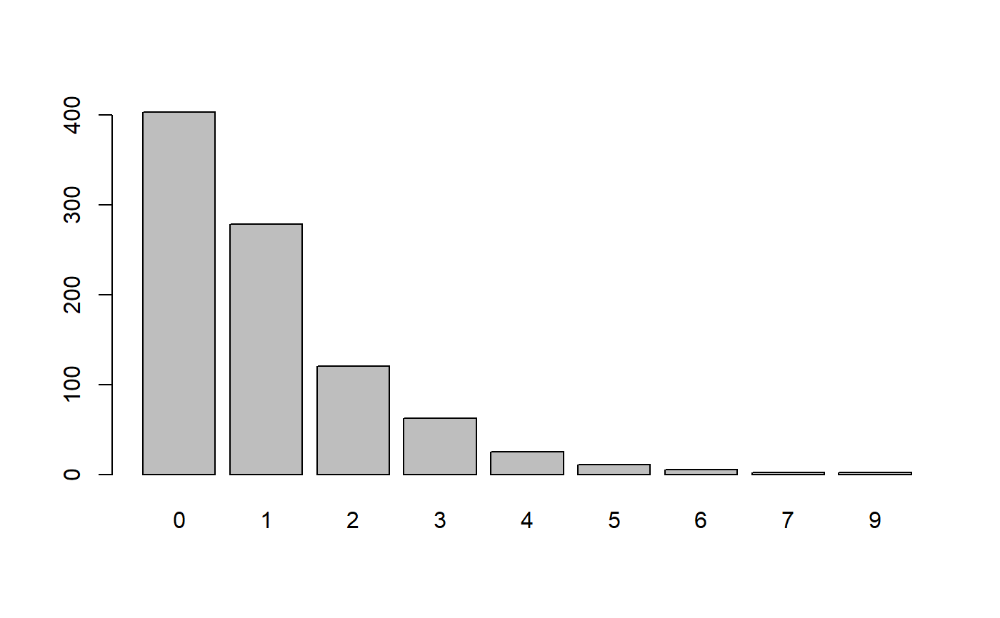

overdisp() checks generalized linear (mixed) models for
overdispersion, while zero_count() checks whether models
from poisson-families are over- or underfitting zero-counts in
the outcome.
overdisp(x, ...) # S3 method for glm overdisp(x, trafo = NULL, ...) zero_count(x, tolerance = 0.05)
| x | Fitted GLMM (of class |
|---|---|
| ... | Currently not used. |
| trafo | A specification of the alternative, can be numeric or a
(positive) function or |
| tolerance | The tolerance for the ratio of observed and predicted
zeros to considered as over- or underfitting zero-counts. A ratio
between 1 +/- |
For overdisp(), information on the overdispersion test; for
zero_count(), the amount of predicted and observed zeros in
the outcome, as well as the ratio between these two values.
For merMod- and glmmTMB-objects, overdisp() is
based on the code in the GLMM FAQ,
section How can I deal with overdispersion in GLMMs?.
Note that this function only returns an approximate estimate
of an overdispersion parameter, and is probably inaccurate for
zero-inflated mixed models (fitted with glmmTMB).
For glm's, overdisp() simply wraps the dispersiontest
from the AER-package.
For overdispersoion test, a p-value < .05 indicates overdispersion.
For zero_count(), a model that is underfitting zero-counts
indicates a zero-inflation in the data, i.e. it is recommended to
use negative binomial or zero-inflated models then.
Bolker B et al. (2017): GLMM FAQ.
library(sjmisc) data(efc) # response has many zero-counts, poisson models # might be overdispersed barplot(table(efc$tot_sc_e))fit <- glm(tot_sc_e ~ neg_c_7 + e42dep + c160age, data = efc, family = poisson) overdisp(fit)#> #> Overdispersion test #> #> data: x #> z = 3.9657, p-value = 3.658e-05 #> alternative hypothesis: true dispersion is greater than 1 #> sample estimates: #> dispersion #> 1.539409 #>#>zero_count(fit)#> #> # Zero-Count overfitting #> #> Observed zero-counts: 397 #> Predicted zero-counts: 338 #> Ratio: 0.85 #>#>library(lme4) efc$e15relat <- to_factor(efc$e15relat) fit <- glmer(tot_sc_e ~ neg_c_7 + e42dep + c160age + (1 | e15relat), data = efc, family = poisson) overdisp(fit)#> #> # Overdispersion test #> #> dispersion ratio = 1.5282 #> Pearson's Chi-Squared = 1350.8975 #> p-value = 0.0000 #>#>zero_count(fit)#> #> # Zero-Count overfitting #> #> Observed zero-counts: 396 #> Predicted zero-counts: 339 #> Ratio: 0.86 #>#>